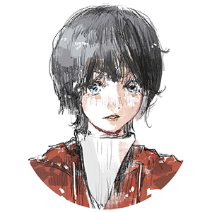

何其锜Qqi He

我是音乐音频算法工程师。现任职于网易云音乐，硕士毕业于复旦大学音频音乐实验室（FD-LAMT）。专注于多模态音乐理解、音乐生成与音乐信息检索领域。I am an AI music researcher @ NetEase Cloud Music. I hold a master’s degree from the Audio and Music Technology Lab at Fudan University (FD-LAMT). My research focuses on multimodal music understanding, music generation, and music information retrieval.
动态Updates
ISMIR 2026 LBDCloudEar 获 Late-Breaking/Demo（LBD）接收CloudEar accepted to the Late-Breaking/Demo (LBD) session
ICMR 2026和弦生成论文录用Chord generation paper accepted：: A Decomposed Retrieval-Edit-Rerank Framework for Chord Generation
论文与专利Publications
RESEARCH论文Papers
- Q He, A Huang. CloudEar: Integrating Perceptual, Diagnostic, and Cross-Modal Evidence for Music Evaluation. 2026 International Society for Music Information Retrieval Conference (ISMIR), Late-Breaking/Demo (LBD), 2026.
- Q He, D Li, X Sun, et al. A Decomposed Retrieval-Edit-Rerank Framework for Chord Generation[C]//2026 ACM International Conference on Multimedia Retrieval (ICMR). ACM, 2026.
- Q He, X Sun, Y Yu, et al. Deepchorus: A hybrid model of multi-scale convolution and self-attention for chorus detection[C]//2022-2022 IEEE International Conference on Acoustics, Speech and Signal Processing (ICASSP). IEEE, 2022: 411-415.
- X Sun, Q He, Y Gao, et al. Musical Tempo Estimation Using A Multi-Scale Network[J]. Society for Music Information Retrieval, Online, 2021. (ISMIR) 1: 4.
- X Liu, J Qian, Q He, et al. LC-Beating: An Online System for Beat and Downbeat Tracking using Latency-Controlled Mechanism[C]//2023 IEEE International Conference on Multimedia and Expo (ICME). IEEE, 2023: 1098-1103.
- X Sun, X Liang, Q He, et al. Gio: A timbre-informed approach for pitch tracking in highly noisy environments[C]//Proceedings of the 2022 International Conference on Multimedia Retrieval (ICMR). 2022: 480-488.
- Q He, A Huang. CloudEar: Integrating Perceptual, Diagnostic, and Cross-Modal Evidence for Music Evaluation. 2026 International Society for Music Information Retrieval Conference (ISMIR), Late-Breaking/Demo (LBD), 2026.
- Q He, D Li, X Sun, et al. A Decomposed Retrieval-Edit-Rerank Framework for Chord Generation[C]//2026 ACM International Conference on Multimedia Retrieval (ICMR). ACM, 2026.
- Q He, X Sun, Y Yu, et al. Deepchorus: A hybrid model of multi-scale convolution and self-attention for chorus detection[C]//2022-2022 IEEE International Conference on Acoustics, Speech and Signal Processing (ICASSP). IEEE, 2022: 411-415.
- X Sun, Q He, Y Gao, et al. Musical Tempo Estimation Using A Multi-Scale Network[J]. Society for Music Information Retrieval, Online, 2021. (ISMIR) 1: 4.
- X Liu, J Qian, Q He, et al. LC-Beating: An Online System for Beat and Downbeat Tracking using Latency-Controlled Mechanism[C]//2023 IEEE International Conference on Multimedia and Expo (ICME). IEEE, 2023: 1098-1103.
- X Sun, X Liang, Q He, et al. Gio: A timbre-informed approach for pitch tracking in highly noisy environments[C]//Proceedings of the 2022 International Conference on Multimedia Retrieval (ICMR). 2022: 480-488.
专利（中国）Patents (China)
- [CN116312633A] Method, system, equipment and storage medium for detecting chorus structure
- [CN118072698A] Chord sequence generation method, device, terminal and storage medium
- [CN118042234A] Predicting method and device for trending songs, storage medium and computing equipment
- [CN119132264B] Music data processing method, device, storage medium and electronic equipment
- [CN121331167A] Audio quality evaluation method and device and electronic equipment
演讲Talks
- 语义大模型在相似歌曲检索中的应用, CSMT 2024 Tutorial
- 基于音频大模型的自动音乐质量评价, Music China 2025
- 自动音乐评价在大模型时代的机遇与实践, CSMT 2025 Tutorial
- Application of Semantic Large Language Models in Similar Song Retrieval, CSMT 2024 Tutorial
- Audio Foundation Model–Based Automatic Music Quality Evaluation, Music China 2025
- Automatic Music Evaluation in the Foundation Model Era: Opportunities and Real-World Practice, CSMT 2025 Tutorial
音乐Music
BEYOND RESEARCH我也是一名业余键盘手。孩童时期学习双排键电子管风琴，大学和工作后在以乐队键盘手的身份参与线下 Live 演出。I am also an amateur keyboardist. I learned to play the Electone as a child and have performed live as a band keyboardist during university and since starting my career.
K-OVER! 2024–2026 · ShanghaiBilibili ↗
MUON 2017–2019 · Guangzhou
演出记录Performance archive
- Project Sekai Only上海宝山智慧湾
- 极光纪 7thCAVE ART VENUE
- 吟飞 2026 新春音乐会线上
- MyGO!!!!!×Ave Mujica 同人对邦 Live意空间见
- BanGDream Only 5 SP上海瓦肆VAS ear
- 苏州 BanGDream Only苏州尹山湖大剧院
- 杭州 音乐番 Only杭州临平大剧院
- 光与影的赋格 Mygo X Avemujica 同人对邦 Live奶油俱乐部
- 极光纪 6th奶油俱乐部
- 复交同萌·三校联合 Live五角场百联ZX
- 二次元商演 Live浦东佛罗伦萨小镇
- BanGDream! Only#4元气森林LIVE
- 二次元联合 Live复旦大学叶耀珍楼
- 创作连锁 2024箴影文化会议中心
- 孤独摇滚 & 轻音少女 Live 专场哈雷前厅
- 极光纪 5thTHE BOXX
- 乐盟迎新复旦大学叶耀珍楼
- 沸点纪复旦法学院报告厅
- 初夏纪上财创业中心
- 二向迭音徐汇光启商场
- 五月雨二次元音乐会复旦相辉堂
- 岁末祭 2018华山运动场
- 七彩飞弦华山新学生活动中心
- 吉他协会 Live真维斯学生活动中心
- 岁末祭 2017华山运动场
- Project Sekai OnlyWisdom Bay, Baoshan, Shanghai
- Polar Ray 7thCAVE ART VENUE
- Ringway New Year Concert 2026Online
- MyGO!!!!!×Ave Mujica ACGN LiveEncoreSpace
- BanGDream Only 5 SPVAS ear
- BanGDream Only in SuzhouYinshan Lake Grand Theater
- ACGN Live in HangzhouLinping Grand Theater
- Mygo X Avemujica ACGN LiveCream Club
- Polar Ray 6thCream Club
- ACGN LiveWujiaochang Meta ZX
- Commercial LiveFlorentia Village
- BanGDream! Only#4Chi Forest LIVE
- ACGN LiveFDU
- Produce Chain 2024Minhang District, Shanghai
- BocchiTheRock & K-ON! only LiveHarley's Bar
- PolarRayTHE BOXX
- Newcomer's LiveFDU
- ACGN LiveFDU (沸点纪)
- ACGN LiveSUFE (初夏纪)
- ACGN LiveXuhui District, Shanghai (二向迭音)
- ACGN LiveFDU (五月雨)
- ACGN LiveSCAU (岁末祭 2018)
- Live of Guitar ClubSCAU (七彩飞弦)
- Live of Guitar Club LiveSCAU (吉他协会)
- ACGN LiveSCAU (岁末祭 2017)
联系Contact
SAY HELLO中国上海Shanghai, China